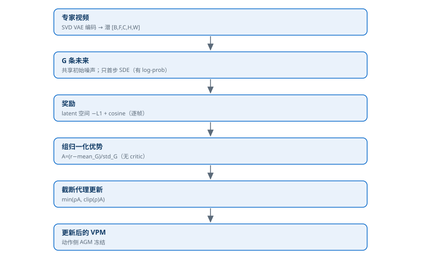

SVD VAE 潜 + 视频预测器（VPM） · 首步 SDE 采样 G 条未来 · 奖励=−L1+cosine · 组归一化 TRPO/GRPO 更新
把「视频预测器」当策略：同一观测下想象 G 条未来，奖励由与专家未来的潜距离给出；用 GRPO 更新 VPM，动作生成器（AGM）冻结。
| 项 | 值 |
|---|---|
| 训练对象 | 仅 VPM（UNet）；VAE/文本编码器冻结 |
| 组大小/步数 | G=8；20 步去噪；guidance 7.5 |
| 优化 | lr=1e-6；clip=0.2；adv_clip_max=2.0；10k steps |
| 结果 | CALVIN/LIBERO 视频预测指标提升（论文表格，L3） |
| 层级 | 内容 |
|---|---|
| L1 计算理论 | 不与环境交互，改进视频预测器使其「想象」更接近专家未来；约束：奖励必须离线可算（专家潜距离）。 |
| L2 表征与算法 | 表征：SVD VAE 潜；算法：首步 SDE 采样 + 组归一化 GRPO 截断更新。 |
| L3 实现 | UNet VPM；20 步去噪、G=8、lr=1e-6、clip=0.2；动作侧冻结。 |

物理：同一条当前观测下想象多种未来；与专家未来越接近的想象越可执行。
物理：结构像 + 方向像；潜空间计算，不解码像素。
物理：同组比较，组均值当基线——GRPO 与 PPO 的核心区别。
物理：ρ=π_new/π_old；取 min 得到悲观更新，防单样本带飞。
物理：只有首步的随机转移有密度，才有 log-prob 与策略梯度。
仓库 OpenHelix-Team/VAMPO：grpo/reward_fn.py、step1_train_svd_grpo.py（源码级）。
# 输入：expert_latents [B,F,C,H,W]；输出：更新后的 VPM
def rollout_group(vpm, z0, cond, G=8, steps=20):
# 物理：首步加噪让想象分叉；后续 ODE 保证轨迹可比
trajs, logps = [], []
for g in range(G):
z, logp = z0.clone(), 0.0
for i, t in enumerate(scheduler.timesteps(steps)):
if i == 0: z, logp = eas_step_with_logprob(vpm, z, t, cond) # SDE
else: z = euler_step(vpm, z, t, cond) # ODE
trajs.append(z); logps.append(logp)
return trajs, logps
def latent_reward(pred, expert):
# 物理：L1 管结构，cosine 管方向
mae = l1(pred, expert).mean(dim=[2,3,4]) # [B,F]
cos = cosine_sim(pred.flatten(2), expert.flatten(2))
return -mae + cos
def grpo_update(vpm, trajs, logps, expert, clip=0.2):
r = [latent_reward(z, expert) for z in trajs]
adv = (r - mean(r)) / (std(r) + 1e-8) # 组归一化
loss = 0
for z, lp, a in zip(trajs, logps, adv):
ratio = exp(new_logprob(vpm, z) - lp)
loss += min(-a*ratio, -a*clip(ratio, 1-clip, 1+clip))
vpm.update(loss)返回 方法精读 Wiki 索引 ｜ 博客：VLA/WAM 的 RL 后训练实现版